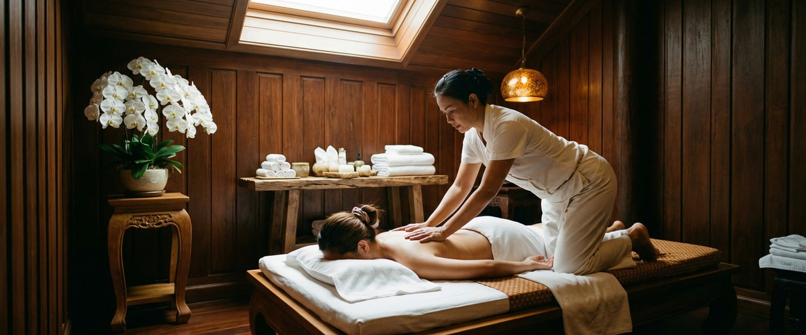
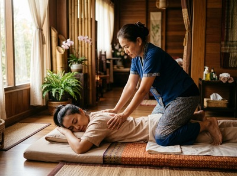

Tiger Lily Thai Spa has built a strong reputation in Glasgow city centre.

With 118 reviews and a 4.4-star rating, it is one of the most reviewed Thai massage venues in the city, and that review count reflects a genuinely established business. If you have come across Tiger Lily while looking for traditional Thai massage or oil massage in Glasgow, the interest makes sense: the location on West Regent Street is central, the rating is solid, and the business has clearly served a large number of clients.
What the Tiger Lily website does not offer is pricing. There is no treatment menu with costs listed, no online booking calendar, and no therapist profiles or credential information. If you want to know what a session costs before you pick up the phone, or if you want to book at a time that suits you without waiting for a call back, you will need to look elsewhere. That is a common reason people continue searching after finding Tiger Lily, and it is worth knowing your options.

Glasgow Thai Massage is a traditional Thai massage studio on West Nile Street in Glasgow city centre, founded by Maliwan Malone. Maliwan trained at Wat Pho Thai Massage School in Bangkok, the institution most closely associated with authentic Thai massage technique, and has more than 20 years of practice. Her daughter Jariya trained alongside her and works at the studio as a fellow practitioner. That combination of verified credential and family-run continuity is not something you will find at many venues in the city.
The studio offers traditional Thai massage, Thai oil massage, deep tissue massage, and sports massage, along with a full menu of treatments including Thai aromatherapy massage, hot stone massage, foot massage, facial massage, and head massage. Pricing is listed on the website, so you know exactly what a session costs before you book. Appointments are made online, without a phone call. You can book your session today at https://glasgowthaimassage.co.uk/booking-form/.
Tiger Lily Thai Spa does not display pricing on its website, and there is no online booking system visible to prospective clients. Glasgow Thai Massage lists all treatment prices before you book and provides a direct online booking form available at any hour. Tiger Lily also provides no therapist profiles or training background on its site. Glasgow Thai Massage's practitioners hold verified Wat Pho credentials, and that information is publicly available as part of how the business presents itself.
Where Tiger Lily leads is in review volume. 118 Google reviews is a substantial track record, and the 4.4-star rating reflects consistent client satisfaction over time. Glasgow Thai Massage has a smaller review base at present. If the weight of accumulated reviews is your primary decision factor, Tiger Lily has an advantage there. What Glasgow Thai Massage offers in return is full pricing transparency, online booking, and a clearly documented training background that is harder to find elsewhere in the city.
Glasgow Thai Massage is particularly well suited to office workers and professionals based in the city centre who want to book a session on their own schedule, without back-and-forth by phone, and who want to know the cost upfront. It suits anyone looking for traditional Thai technique rooted in genuine Wat Pho training rather than a generalised wellness offering. Athletes and active people managing recovery will find Thai sports massage and deep tissue work delivered by practitioners with a serious therapeutic background. And for anyone returning for regular sessions, a two-person studio where you see the same therapist each visit offers a consistency that larger operations rarely match.
From Tiger Lily Thai Spa on West Regent Street, Glasgow Thai Massage is approximately a ten-minute walk. Head east along West Regent Street toward Nelson Mandela Place, then turn left onto Buchanan Street. Walk north along Buchanan Street, passing the St Enoch and Buchanan Street subway stations, then turn left onto West Nile Street. Glasgow Thai Massage is at Victoria Chambers, 142 West Nile Street, on the third floor, Suite 4. The entrance is on the left-hand side of West Nile Street heading north from the Buchanan Street junction.
Get driving directions to Glasgow Thai Massage:
Glasgow Thai Massage — Floor 3 Suite 4, Victoria Chambers, 142 West Nile Street, Glasgow G1 2RQ
Book online now at https://glasgowthaimassage.co.uk/booking-form/ and secure your appointment without a phone call.
Yes. Glasgow Thai Massage has a direct online booking form at glasgowthaimassage.co.uk/booking-form/. You can book at any time without needing to call. Tiger Lily Thai Spa does not have a visible online booking system on its website, which means prospective clients typically need to contact the business by phone to arrange an appointment.
Glasgow Thai Massage was founded by Maliwan Malone, who trained at Wat Pho Thai Massage School in Bangkok and has over 20 years of practice. Her daughter Jariya is a fellow practitioner at the studio. Tiger Lily Thai Spa's website does not publish therapist profiles, training backgrounds, or credential information, so a direct comparison of qualifications is not possible from publicly available data.
Glasgow Thai Massage is at Floor 3, Suite 4, Victoria Chambers, 142 West Nile Street, Glasgow G1 2RQ. The studio is in Glasgow city centre, within walking distance of Buchanan Street subway station. Tiger Lily Thai Spa is located on West Regent Street, also in the city centre, approximately ten minutes away on foot.
Glasgow Thai Massage offers traditional Thai massage, Thai oil massage, Thai aromatherapy massage, Thai sports massage, Thai facial massage, Thai foot massage, Thai head massage, and Thai stone massage. Tiger Lily Thai Spa lists traditional Thai massage, modern Thai oil massage, facial treatments, and couple treatment packages as its services.
Yes. Glasgow Thai Massage displays treatment prices on its website so you know the cost before committing to a booking. Tiger Lily Thai Spa does not publish pricing on its website, which means you would need to contact them directly to find out what a session costs.
Glasgow Thai Massage holds a 4.7-star rating on Google. Reviews reference the quality of the treatment, the skill and care of the practitioners, and the experience of booking and arriving at the studio. Tiger Lily Thai Spa holds a 4.4-star rating from 118 reviews, which represents a larger volume of feedback accumulated over a longer period.
Book your appointment at https://glasgowthaimassage.co.uk/booking-form/ and see the full treatment menu and pricing before you commit.